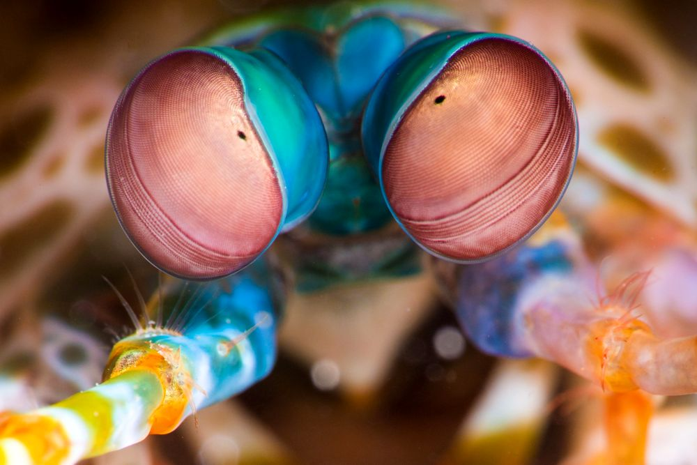

Fatos sobre o Stomatopoda
Dados científicos (Stomatopoda)
-
Nome científico: Stomatopoda (Odontodactylus scyllarus)
Outros nomes: Stomatopod, gafanhoto do mar, separador de polegar, matador de camarão - Reino: Animalia
- Filo: Arthropoda
- Subfilo: Crustáceos
- Classe: Malacostraca
- Ordem: Stomatopoda
- Fato engraçado: Um ataque de uma garra de camarão mantis é tão forte que pode quebrar o vidro do aquário.
Visão
Estomatopodes têm a visão mais complexa no reino animal, excedendo até a das borboletas. O camarão mantis tem olhos compostos montados em caules e pode girá-los independentemente um do outro para examinar seus arredores. Enquanto os humanos têm três tipos de fotorreceptores, os olhos de um camarão mantis têm entre 12 e 16 tipos de células fotorreceptoras. Algumas espécies podem até ajustar a sensibilidade de sua visão de cores.
Descrição

Existem mais de 500 espécies de camarões mantis em uma variedade de tamanhos e cores do arco-íris. Como outros crustáceos, o camarão mantis tem uma carapaça ou casca. Suas cores variam de marrom a tons de arco-íris vívidos. O camarão mantis maduro médio tem cerca de 10 centímetros (3,9 polegadas) de comprimento, mas alguns chegam a 38 centímetros (15 polegadas). Um deles foi documentado até 46 centímetros (18 polegadas). As garras do camarão mantis são sua característica mais distinta. Dependendo da espécie, o segundo par de apêndices, conhecido como garras do raptor, atua como clavas ou lanças. O camarão mantis pode usar suas garras para espancar ou esfaquear presas.